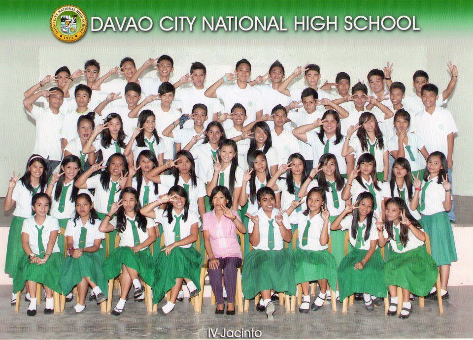
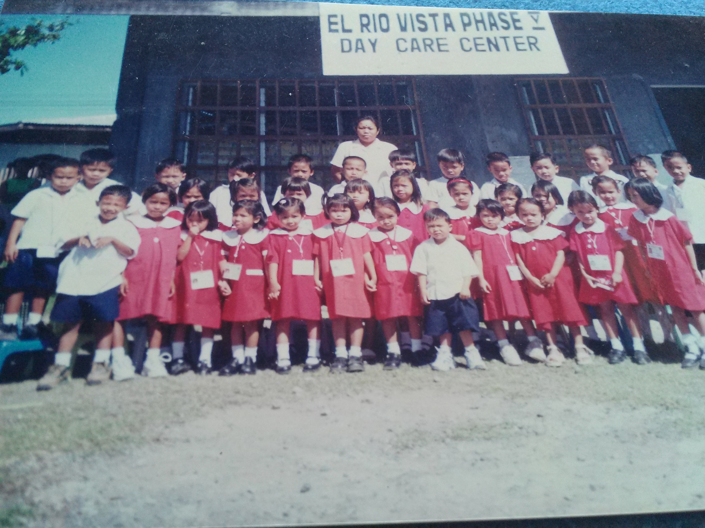

This site contains photographies and informations about myself. Being an IT student is not as easy as counting 1,2,3 . Work, work, work, code, code, code.
When the time that my Mother decided to take me to school that was 13 years ago , when I was still 5 years-old -- that was the time I came to school for the very first time. It was the awkward stage of the 18th year of my existence though I know I get the opportunity to be involved on somehow larger groups the feeling that I am going into this kind of society makes me feel nervous and now I am still going to school and still extending my gratitude to my parents and to all my relatives who helped us financially.  |